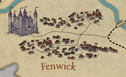

Its ruled by Lord Hal Nedye, a younger lord for the region. The previous lord passed unexpectedly and Duskhelm did not have time to deliberate about a replacement so his son came into power by default. He is in his late 30s and isn't very well liked by the people due to his inexperience and young age. His father had kept taxes low to please the people, but at the cost of mounting debt. His son choose to raise the taxes to escape the scrutiny of Duskhelm, but it only brought the scrutiny of the people.